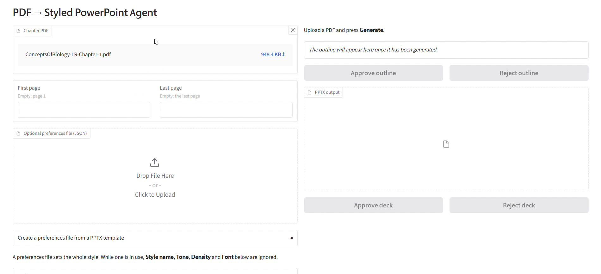
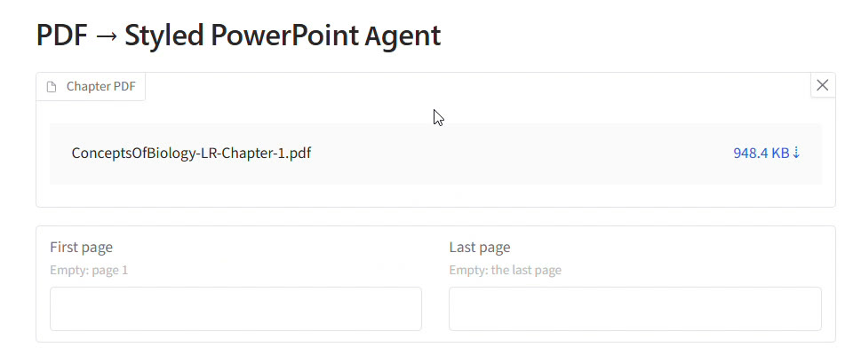
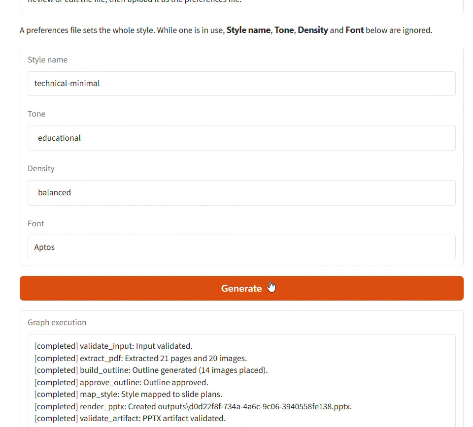
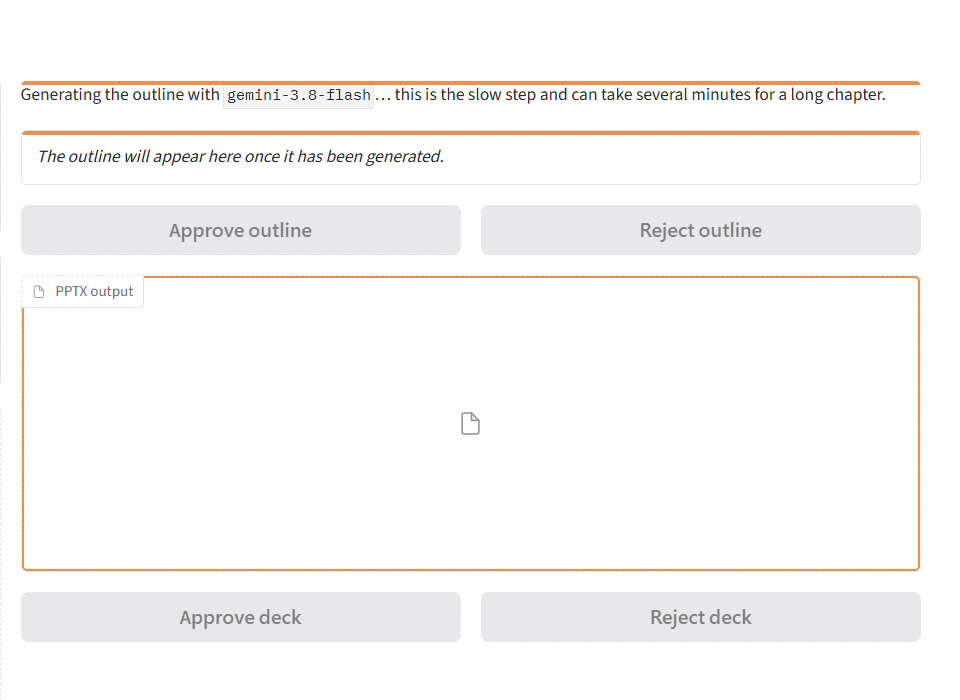
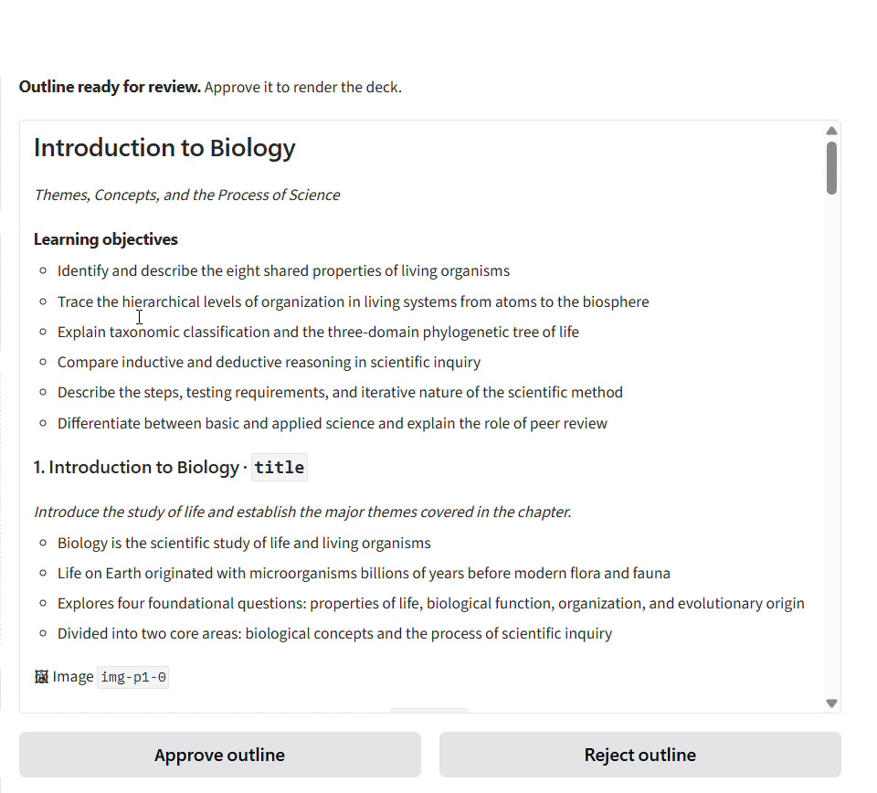
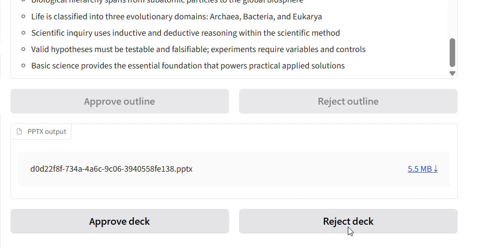
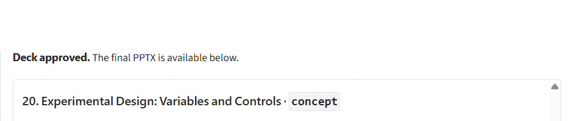
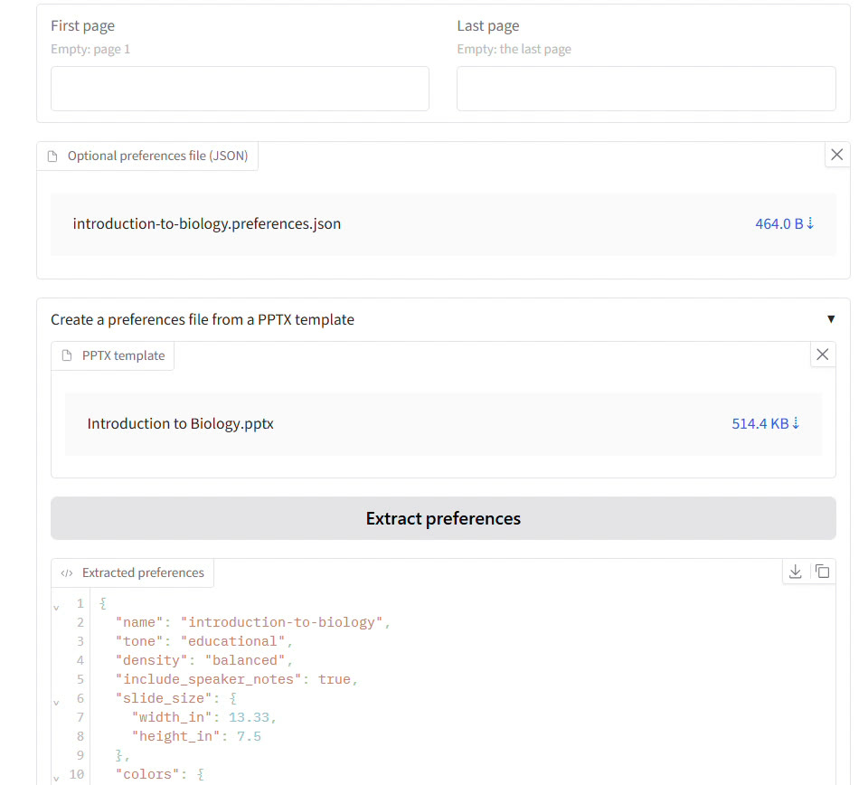
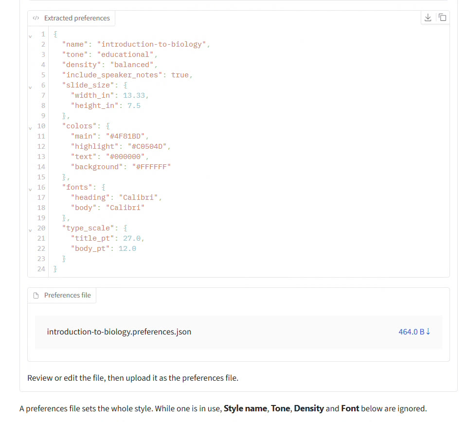
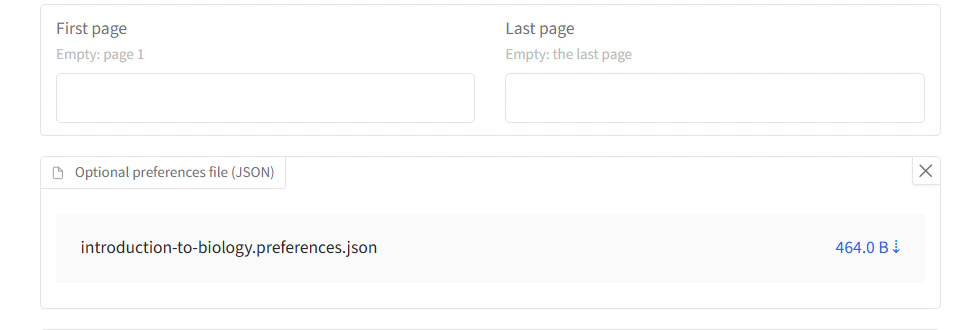

Upload a chapter, pick a style, and the agent builds a PowerPoint deck from it. You approve twice: once on the outline, before anything is rendered, and once on the finished deck.
uv run pdf2deckThen open the URL it prints, usually
http://127.0.0.1:7860
Inputs live in the left column. Everything you review and approve appears in the right column. The style fields, the Generate button and the run log sit further down the left column.

1 2 3 4 5 6 7 8 9Drop the PDF on Chapter PDF, or click it to browse. To use only part of the document, type page numbers into First page and Last page. Empty fields mean page 1 and the last page.

1 2Set Style name, Tone (formal, educational, executive or conversational), Density (sparse, balanced or dense) and Font. Then press Generate. If you already have a preferences file, upload it instead and skip these fields (see Reuse a deck's look).

1 2 3 4technical-minimal, educational, balanced, Aptos) work for most chapters.validate_input through validate_artifact.Text and images come out of the PDF in seconds. Writing the outline with the language model is the slow part. For this 21-page chapter it took about 75 seconds, and longer chapters take several minutes. The page doesn't need any input while it works.

1 2When the status says Outline ready for review, scroll the outline panel. It lists the deck title, the learning objectives, then every slide with its purpose, its key points, its layout type and any image it will use. Nothing has been rendered yet, so this is the cheapest place to catch problems.

1 2 3 4 5 6title, concept, bullets, comparison or summary.img-p1-0 is the first image on page 1.Rendering takes a few seconds. The status reports how many slides were made, and the file appears under PPTX output. Download it, open it in PowerPoint, then come back and decide.

1 2 3outputs/ folder.The status changes to Deck approved. The final file stays under PPTX output, and the outline stays on screen for reference.

1A preferences file stores a whole style as JSON: colours, fonts, type sizes, slide size, tone and density. You can create one from any existing .pptx, then use it on any PDF. In the test run, the deck Gemini produced was turned into a preferences file this way.
Open Create a preferences file from a PPTX template, drop a .pptx on PPTX template, and press Extract preferences.

1 2 3 4Read through the extracted values, starting with the colours. They come from the template's theme. A deck that colours its shapes directly, rather than through the theme, can return the theme's stock accents instead of the colours you see on its slides. That happened here.

1 2 3colors: here the theme's stock blue and red came back, not the greens used on the Gemini slides.<name>.preferences.json. Click the size to download it.Open the downloaded file in any text editor. In the test run, only the two accent colours were changed, to match the green of the source deck.
{
"name": "introduction-to-biology",
"tone": "educational",
"density": "balanced",
"colors": {
"main": "#4fbd8b",
"highlight": "#348b64",
"text": "#000000",
"background": "#FFFFFF"
},
"fonts": { "heading": "Calibri", "body": "Calibri" },
"type_scale": { "title_pt": 27.0, "body_pt": 12.0 }
}
Upload the file to Optional preferences file (JSON), then press Generate and continue from step 3. The file stays loaded for later runs until you remove it.

1 2If the project's settings name a default preferences file, the style fields stay locked even with nothing uploaded, and the note above them names that file.
Messages appear as a pop-up or in the status line.
| Message | What happened | What to do |
|---|---|---|
| Upload a PDF first. | Generate was pressed with no chapter loaded. | Add the PDF in step 1. |
| Invalid page range: … | A page field holds something other than a page number, or the range is out of order. | Fix the numbers, or clear both fields. |
| Stopped: Pages … are outside the PDF, … | The page range goes past the end of the document. | Use a last page within the PDF's page count, or leave it empty. |
| Stopped: Outline was rejected. … | You pressed Reject outline. | Change the inputs and press Generate for a fresh run. |
| Stopped: Deck was rejected. | You pressed Reject deck. | Adjust the style and generate again. |
| No outline is waiting for review. | A review button was clicked after that checkpoint had passed. | Check the status line to see where the run is. |
| Failed: … | The model call or rendering raised an error. | Read the terminal running uv run pdf2deck for details, then retry. |
| Upload a PPTX template first. | Extract preferences was pressed with no template. | Drop a .pptx on PPTX template. |